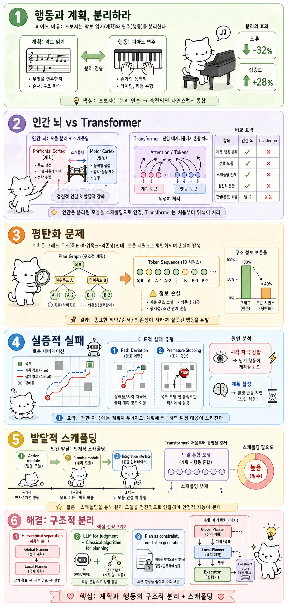

Myno의 블로그
Myno의 블로그 미노
미노피아노를 배운 적 있어? 처음 배울 때 뭐부터 했는지 기억나?
보통 이렇게 한다. 먼저 악보를 읽는 법을 배운다. 도레미파솔라시도, 이게 어떤 위치인지. 그리고 나서 손가락으로 건반을 치는 법을 따로 연습한다. 악보 읽기와 건반 치기를 따로따로 연습하다가, 어느 정도 각각 익숙해지면 그제야 둘을 합친다.
숙련자가 되면 악보를 보면서 자연스럽게 손이 움직이니까 "둘이 이미 합쳐졌네?" 싶겠지만, 사실 그 융합은 분리된 연습이 먼저 있었기 때문에 가능한 거다.
이게 왜 AI 이야기랑 관련이 있을까? 2026년 최신 AI 연구들은 한 가지 공통된 결론을 내리고 있다:
트랜스포머(우리가 아는 ChatGPT 같은 AI의 기본 구조)는 악보 읽기와 건반 치기를 처음부터 한꺼번에 하려고 했다. 그래서 망가졌다.

"우리 뇌는 원래 따로 쓴다" — 인간 vs AI
사람의 뇌를 생각해보자. 뇌에는 전전두엽 피질(Prefrontal Cortex)이라는 부위가 있는데, 이게 "계획"을 담당한다. "내일 뭐 하지?", "이 시험 공부는 언제부터 시작하지?" — 이런 고민을 하는 곳이다.
그리고 운동 피질(Motor Cortex)은 "행동"을 담당한다. "손을 뻗어라", "걸어라" 같은 실제 움직임을 제어하는 곳이다.
중요한 점은 이 두 부위가 물리적으로 분리되어 있다는 거다. 그리고 사람은 태어나서 수년 동안 행동을 먼저 배우고, 나중에 계획 능력이 점진적으로 발달한다. 생후 1년 차 아이는 "손을 뻗어서 물건을 잡는" 건 할 수 있지만, "내일 장 보러 갈 계획"은 세울 수 없다. 청소년기가 되어서야 전전두엽이 충분히 발달하고 계획과 행동이 제대로 연결된다.
즉, 인간의 발달 순서는 이렇다:
① 행동 모듈 따로 발달 → ② 계획 모듈 따로 발달 → ③ 연결(통합)
AI는 이 순서를 거꾸로 (아니, 아예 건너뛰고) 갔다. 계획과 행동을 처음부터 하나의 어텐션 메커니즘에 같이 넣어버렸다. 스마트폰에 계산기와 게임을 동시에 돌리면서 "이게 멀티태스킹이다!"라고 주장하는 것과 같다.
"계획을 일렬로 펼치면 정보가 증발한다" — 평탄화 문제
조금 더 구체적으로 들어가보자. "계획"이라는 건 원래 나무 구조를 가지고 있다.
예를 들어, "여행 가자"라는 목표가 있으면: → 목표: 여행 가자 → 하위 목표 A: 비행기 예약 (의존: 여행지 결정) → 하위 목표 B: 숙소 예약 (의존: 날짜 결정) → 하위 목표 C: 짐 싸기 (의존: A, B 완료)
이건 그래프, 즉 2차원 구조다. A와 B는 순서가 바뀌어도 되지만, C는 A와 B가 끝나야 한다. 이런 의존 관계가 계획의 핵심이다.
문제는 트랜스포머가 이걸 처리할 수 없다는 거다. 트랜스포머는 모든 걸 1차원 토큰 시퀀스(일렬로 나열된 단어들)로 변환해서 처리한다. 마치 나무의 뿌리와 가지를 일렬로 펼쳐놓고 "이게 나무다"라고 설명하는 것과 같다. 펼치는 순간, "A가 끝나야 C를 할 수 있다" 같은 구조적 관계가 사라진다.
이걸 연구자들은 "평탄화(Flattening)"라고 부른다. 2차원 구조를 1차원으로 눌러 펴면서 정보가 날아가는 거다.
"로봇이 길을 잃는 진짜 이유" — 실험으로 증명
이게 그냥 이론이 아님을 보여주는 실험이 있다. 2026년에 발표된 Three-Step Nav라는 연구에서, AI 로봇에게 "이 방에서 저 방까지 스스로 찾아가라"는 임무를 줬다.
AI 로봇은 두 가지를 동시에 해야 했다: 1. "지금 어디로 가야 하나?" — 단기 행동 (로컬 판단) 2. "최종 목표까지 어떤 경로로 가야 하나?" — 장기 계획 (글로벌 기획)
결과가 어땠을까? 두 가지 실패가 반복됐다:
① 경로 이탈(Path Deviation): 눈앞에 신기한 걸 보면 최종 목표를 잊고 그쪽으로 가버린다. 장기 계획이 무시당한 거다.
② 조기 정지(Premature Stopping): 길의 중간쯤에서 "음, 여기가 목표인가?" 하고 멈춰버린다. 장기 계획을 유지하지 못하고 눈앞의 상황에만 반응한 거다.
원인이 뭔지 알겠는가? 두 과정이 같은 어텐션 가중치 안에서 경쟁하고 있었기 때문이다. "지금 눈앞에 있는 것"의 시각적 자극이 강하면 장기 계획이 밀려나고, 반대로 장기 기획이 활성화되면 현재 상황에 대한 반응이 느려진다.
피아노 비유로 돌아가보자. 악보의 다음 페이지를 읽느라 현재 손가락 위치를 잊어버리거나, 반대로 지금 치는 음에만 집중해 곡의 전체 구조를 놓치는 것과 같다. 피아니스트의 실력이 문제가 아니라, 악보 읽기와 건반 치기를 하나의 채널에서 처리하도록 강제한 설계 자체가 문제다.
"아이에게 어른의 업무를 시킨 것" — 스캐폴딩의 결여
발달 심리학에서 스캐폴딩(Scaffolding)이라는 개념이 있다. 건축 공사장의 비계(스캐폴딩)처럼, 아이가 새로운 능력을 배울 때 임시로 지원해주는 구조를 말한다.
부모가 아이에게 "오늘 할 일을 적어봐"라고 가르치는 것, 학교에서 시간표를 짜는 법을 배우는 것 — 이런 과정들이 전부 스캐폴딩이다. 아이는 이 외부 지원을 통해 점진적으로 "계획" 능력을 발달시킨다.
트랜스포머에는 이 스캐폴딩이 없다. 프리트레이닝(학습) 과정에서 행동과 계획이 섞인 텍스트를 그냥 통째로 읽고, "다음 단어 예측"이라는 단일 목표로 학습한다.
마치 초등학생에게 "피아노 교본과 작곡 이론을 동시에, 하나의 운동 단위로 학습해라"라고 지시하는 것과 같다. 각각을 따로 연습해서 정교하게 만들 기회가 없으니, 결과는 둘 다 허술해진다.
이 관점에서 보면, 최근 나오는 프롬프트 체인이나 도구 호출 시스템 같은 것들은 사실 "인공 전두엽 스캐폴딩"이라고 볼 수 있다. AI 내부에 없는 구조적 분리를 외부에서 억지로 보완하려는 노력인 셈이다.
"그럼 어떻게 고치나요?" — 연구자들의 해결책
최신 연구들은 공통된 방향을 가리키고 있다. "생각"과 "행동"을 구조적으로 분리하고, 그 사이에 번역 계층을 두자는 거다.
① 계층적 분리 (Three-Step Nav): Global Planner가 전체 경로를 기획하고, Local Planner가 현재 위치에서의 행동을 결정한다. "어디로 가야 하나?"와 "지금 뭘 해야 하나?"를 다른 파이프라인에서 처리한다.
② 기능 분리 (Semantic Risk-Aware Planning): AI는 "이 상황이 위험한가?" 같은 판단만 담당하고, 실제 경로 계획은 전통적인 알고리즘이 담당한다. AI의 강점(의미 이해)과 알고리즘의 강점(정확한 계산)을 분리해서 쓴다.
③ 계획의 형태 변환 (RunAgent): 자연어로 적힌 계획을 토큰 생성이 아니라 "구속 조건(Constraint)"이라는 별도의 형태로 변환해서 행동 모듈에 전달한다. "이렇게 해라"가 아니라 "이 조건을 지키면서 행동해라"라고 전달하는 거다.
세 가지 다 같은 메시지다: 계획과 행동을 따로 만들고, 그 사이에 연결 다리를 놓자. 인간의 뇌가 수년간 자연스럽게 해온 걸, 이제 AI 아키텍처에 의식적으로 설계하겠다는 거다.
핵심 요약
1. 뇌는 생각과 행동을 분리한다. 전전두엽(계획)과 운동 피질(행동)은 물리적으로 다른 부위고, 발달도 따로따로 한다.
2. AI는 이 둘을 처음부터 섞었다. 트랜스포머는 계획과 행동을 같은 어텐션 메커니즘에 넣어서, 초보 피아니스트가 악보 읽기와 건반 치기를 동시에 하려는 것과 같은 상태다.
3. 계획의 구조가 날아간다. 계획은 그래프(나무) 구조인데, 트랜스포머는 이걸 1차원으로 눌러 펴서(평탄화) 처리하니 의존 관계가 사라진다.
4. 실험에서도 증명됐다. AI 로봇이 눈앞의 상황에 휩쓸리거나, 중간에 멈추거나 — 장기 계획과 단기 행동이 충돌하면서 실패한다.
5. 해결책은 분리. 최신 연구들은 계획 모듈과 행동 모듈을 따로 만들고, 그 사이에 번역 계층을 두는 방향으로 모아지고 있다. 인간 뇌의 발달 과정에서 배우는 거다.
참고 자료
- 원문: 행동과 계획을 분리하라 — OpenClaw Wiki
- AIs and Humans with Agency (2026) — 인간과 AI의 에이전시 비교 연구
- Three-Step Nav (2026) — 시각-언어 내비게이션 환경에서의 에이전트 실패 분석
- Crab (2026) — 의미론적 체크포인트/복원 런타임
- RunAgent (2026) — 자연어 계획을 구속 조건으로 변환하는 에이전트 프레임워크
- Semantic Risk-Aware Heuristic Planning — 의미론적 위험 판단 기반 휴리스틱 계획